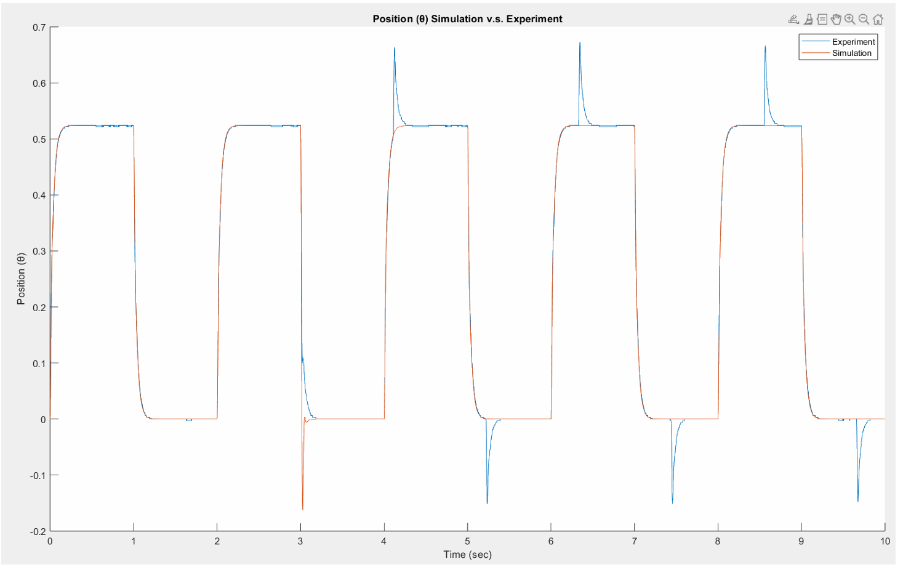

At a glance
- Settling time
- < 2 s
- Steady-state error
- 0%
- Overshoot
- < 10%
- Disturbance recovery
- < 200 ms
What I did
- Characterized the DC motor from oscilloscope and bench data. Torque constant and rotor inertia matched the datasheet within about 5%.
- Built first- and second-order plant models in Simulink and validated them against hardware with hardware-in-the-loop testing on an MF634 I/O board.
- Compared voltage-mode and current-mode motor control in simulation, then chose cascaded PI current and velocity loops with a lead compensator for position, including anti-windup.
